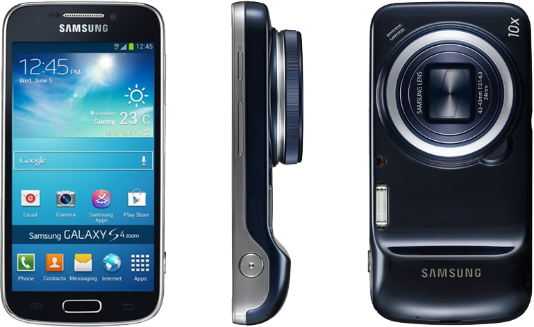

삼성 갤럭시 S4 Zoom
1. 외관

삼성전자가 2013년 3월에 공개한 갤럭시 S4의 파생 모델로, 2013년 6월에 공개한 안드로이드 스마트폰.
2. 사양
| 프로세서 | 삼성 엑시노스 4212 SoC. ARM Cortex-A9 MP2 1.5 GHz CPU, ARM Mali-400 MP4 440 MHz GPU | ||
| 메모리 | 1.5 GB LPDDR2 SDRAM, 8 / 16 GB 내장 메모리, micro SDXC (최대 64 GB 지원) | ||
| 디스플레이 |
4.3인치 qHD(960 x 540) S-Stripe RGB 서브픽셀 방식의 삼성D Super AMOLED 멀티터치 지원 정전식 터치 스크린 |
||
| 네트워크 | 기본 | HSPA+ 42Mbps, HSDPA & HSUPA & UMTS, GSM & EDGE | LTE Cat.3[2], HSPA+ 21Mbps, HSDPA & HSUPA & UMTS, GSM & EDGE |
| - | - | ||
| 카메라 | 전면 190만 화소, 후면 OIS 기술 탑재 1,600만 화소 AF 및 제논 플래시, 35mm 환산 24-240mm 광학 10배줌 지원 | ||
| 배터리 | Li-lon 2330 mAh 착탈식 | ||
| 운영체제 | 안드로이드 4.2 (Jelly Bean) | ||
| 규격 | 63.5 x 125.5 x 15.4 mm, 208 g | ||
3. 상세
갤럭시 S4의 카메라 특화 모델로, 갤럭시 카메라나 노키아 808과 같은 타깃을 대상으로 출시한 제품이다.
본가 갤럭시 S4보다는 성능이 낮으며, 갤럭시 S4 mini보다도 떨어진다. 성능 자체는 갤럭시 노트와 갤럭시 S III의 중간급인 상황.